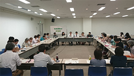

|
|
第52回埼玉県消費者大会実行委員会  9月23日(金)13時30分より、浦和コミュニティセンター第15集会室にて第6回実行委員会が開催され、32人(22団体・事務局2人)とオブザーバー3人が出席しました。 【議題】 1．第5回実行委員会報告(修正・追加の確認を含む)について 開会に先立ち、事務局長から全国消団連のインターンシップ生(3人）が参加していることを伝え、紹介を行いました。その後、事務局より、第5回実行委員会報告と当日の検討内容、確定した基調報告文章、アピール文章について報告し、確認しました。 2．埼玉県への要請文章について 第4回実行委員会から意見交換・FAX意見集約を反映させて作成した埼玉県への要請文を全文読み上げながら、内容についての最終確認を行いました。その結果、基本的な項目については確認され、実行委員会でいただいた意見の加筆・修正については、事務局に一任されました。 3．今年度の消費生活関連事業調査結果について 消費者大会実行委員会・埼玉消団連が実施した消費生活関連事業調査の結果について報告を事務局から行いました。今年度も各実行委員会団体から、調査への協力を自治体に働きかけるなどの動きを行い、埼玉県の全63市町村より回答を得ることができました。報告後、消費者大会実施後の調査結果を持参しての自治体との懇談実施を呼びかけました。 4．大会当日にむけた準備、当日の実行委員会メンバーの動きについて 当日配布する冊子に掲載する団体紹介文章の作成依頼、実行委員会紹介時に登壇する方の確認、昼食の手配状況の確認などを行いました。また、県内消費者団体から、大会当日に取り組みチラシ配布の希望があり、扱いについて検討し、実行委員会団体、実行委員会が把握している県内消費者団体に限り、全体会ロビーに机を用意し、取り組みを知らせるチラシを置けるようにすることを確認しました。 5．分科会の話し合い 第5回実行委員会での分科会の話し合いをまとめた文章で進捗を全体で確認したあと、映画・社会保障・食・消費者課題の4つのテーマにわかれて話し合いを行いました。 |